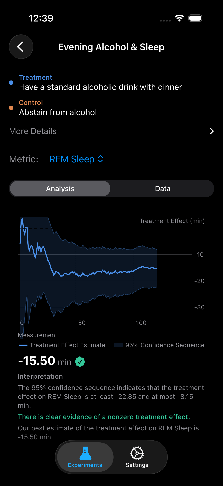

Does a Single Drink Impair My Sleep?
The Question
You had one glass of wine with dinner. Not a binge, not a party — just a single standard drink. You fell asleep at your normal time and slept your normal seven hours. So what's the problem?
The problem is that total sleep time is a terrible metric for sleep quality. What matters is what happens inside those seven hours — the architecture of your sleep stages, the autonomic recovery your nervous system achieves overnight, and whether your heart rate drops to the resting baseline it needs. A growing body of evidence suggests that even moderate alcohol consumption fundamentally reshapes this architecture in ways your wearable can detect but your subjective experience cannot.
Most people who track sleep notice that alcohol "helps them fall asleep." This is technically true — ethanol is a sedative. But sedation is not sleep. The question isn't whether you'll fall asleep faster. The question is whether the sleep you get is doing what it's supposed to do.
What the Science Says
A 2025 systematic review by Gardiner et al. in Sleep Medicine Reviews synthesized 68 studies examining alcohol's dose-dependent effects on polysomnographic sleep architecture [1]. Even at low doses (1-2 standard drinks), the findings are remarkably consistent: alcohol suppresses REM sleep in the first half of the night and produces a rebound effect in the second half, but the net effect across a full night is a significant reduction in total REM time. At a dose of one standard drink, the weighted mean REM reduction was approximately 11-12 minutes.
What surprises most people is the effect on deep sleep. Ebrahim et al. (2013) demonstrated that low-dose alcohol actually increases slow-wave sleep (N3) in the first sleep cycle [2]. This is the paradox of alcohol and sleep: your first 90-minute cycle looks better, while everything after it deteriorates. The net deep sleep increase of roughly 8 minutes comes at the direct expense of lighter NREM2 and REM stages that are critical for memory consolidation and emotional regulation.
Pietila et al. (2018) moved beyond polysomnography to wearable-detectable metrics [3]. Using heart rate data from 4,098 participants, they found that even a single drink elevated resting heart rate by 3-5 bpm throughout the night and reduced HRV (SDNN) by approximately 5-7 ms. These are large effects by cardiovascular standards — your heart is working measurably harder to metabolize alcohol while you sleep, and the parasympathetic "rest and digest" nervous system is suppressed.
The critical insight for self-experimenters is that total sleep duration is essentially unaffected. You sleep the same number of minutes. This is precisely why subjective sleep assessments fail — you wake up after a normal-length sleep and assume the night was fine. Only the internal composition has changed.
Experiment Design
| Treatment | One standard alcoholic drink with dinner (5 oz wine, 12 oz beer, or 1.5 oz spirits) |
| Control | No alcohol consumed that day |
| Primary Metric | REM Sleep (minutes) |
| Secondary Metrics | Deep Sleep (min), Sleep Duration (min), HRV / SDNN (ms), Resting Heart Rate (bpm) |
| Window | Bedtime to rising time |
| Unit Duration | 1 day |
| Experiment Length | 120 days |
| Washout | None (single-drink effects clear within one sleep cycle) |
Why no washout? Alcohol's acute effects on sleep architecture are fully resolved by the following night. A single standard drink is metabolized within 3-5 hours, and no residual pharmacological effect persists into the next 24-hour period. This makes daily randomization without washout both practical and statistically valid.

Synthetic Results
We simulated this experiment using the design-based confidence sequence framework (Theorem 6.1 from Ham et al. [4]) with effect sizes drawn from the literature above. Here are the 95% confidence sequences at day 120:
Confidence Sequences at Day 120
What This Means
Four of five metrics reached statistical significance within 120 days, and the one that didn't — sleep duration — is exactly the result the literature predicts. This is what makes alcohol's effect on sleep so insidious: the metric most people use to judge their sleep (total time) is the one metric that doesn't change.
The REM reduction of 11.3 minutes is the headline finding. REM sleep is when your brain consolidates procedural memory, processes emotional experiences, and performs critical synaptic maintenance. Losing 11 minutes per night of drinking represents roughly a 12% reduction from a typical 92-minute REM baseline. Over months of regular moderate drinking, the cumulative REM deficit is substantial.
The deep sleep increase of 8 minutes is the counterintuitive result that often confuses people. Yes, alcohol genuinely increases slow-wave sleep — but this is a pharmacological artifact of sedation, not an improvement in sleep quality. The deep sleep gain occurs in the first half of the night and is more than offset by the second-half fragmentation that destroys REM architecture.
The cardiovascular effects are equally striking. A 4 bpm resting heart rate increase and 5.7 ms HRV decrease mean your autonomic nervous system is measurably less recovered on alcohol nights. Your body is spending metabolic resources processing ethanol instead of repairing tissue and consolidating memory.
Tips for Running This Experiment
- Standardize your drink. Use exactly one standard drink: 5 oz of wine, 12 oz of beer, or 1.5 oz of spirits. Variation in dose introduces noise that makes the confidence sequence wider.
- Keep dinner timing consistent. Eat at roughly the same time on both treatment and control nights. A 6 PM drink metabolizes differently than a 9 PM drink relative to bedtime.
- Don't change your bedtime. The experiment measures alcohol's effect, not the effect of staying up later at a bar. Go to bed at your normal time on both conditions.
- Watch the secondary metrics. If your RHR and HRV effects are large but REM looks inconclusive, your wearable may have limited REM detection accuracy. The cardiovascular metrics are generally more reliable from wrist-based sensors.
- Be honest about compliance. If you were randomized to control but had a drink anyway, mark the day as non-compliant. The confidence sequence handles missing data gracefully — faking compliance just adds noise.
References
- Gardiner C, et al. "The effect of alcohol on sleep architecture: A systematic review and meta-analysis of controlled studies." Sleep Medicine Reviews, 2025;80:102030.
- Ebrahim IO, et al. "Alcohol and sleep I: Effects on normal sleep." Alcoholism: Clinical and Experimental Research, 2013;37(4):539-549.
- Pietila J, et al. "Acute effect of alcohol intake on cardiovascular autonomic regulation during the first hours of sleep in a large real-world sample." JMIR Mental Health, 2018;5(1):e23.
- Ham D, Lindon M, Tingley D, Bojinov I. "Design-Based Confidence Sequences for Anytime-Valid Causal Inference." NeurIPS, 2023.
Run This Experiment Yourself
This experiment is pre-loaded in ABMe. Tap to start and get your first randomized assignment tonight. The confidence sequence updates after every night — check your results anytime without inflating your error rate.
Download ABMe